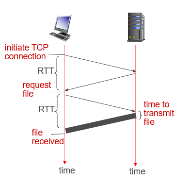
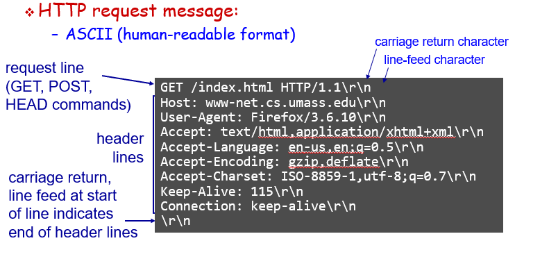
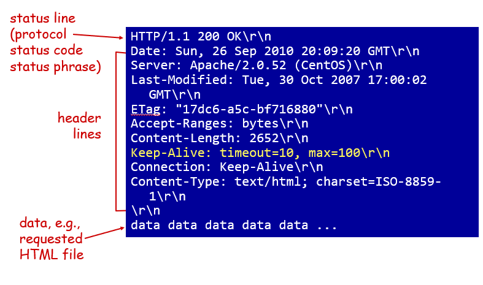
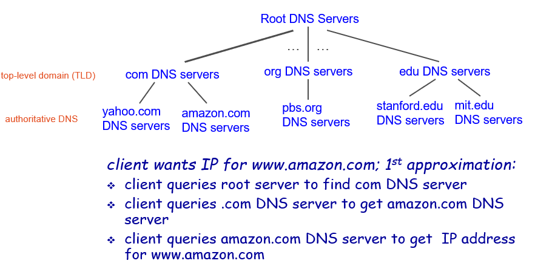
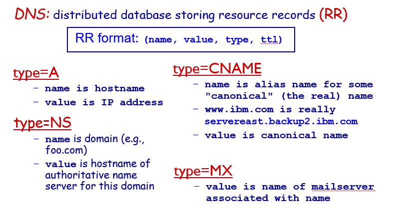
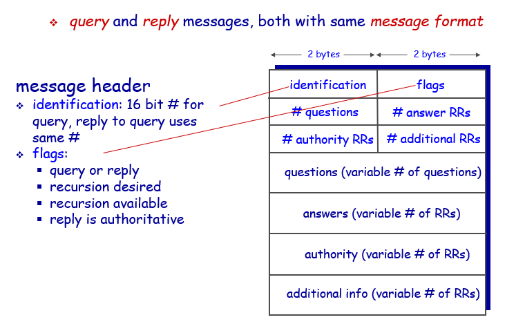

2.1 principles of network applications
Application architectures
Client-server architecture
server:
- always-on host
- permanent IP address
- data centers for scaling
clients:
- communicate with server
- may be intermittently connected
- may have dynamic IP addresses
- do not communicate directly with each other
P2P architecture
- no always-on server
- arbitrary end systems directly communicate
- peers request service from other peers, provide service in return to other peers
- peers are intermittently connected and change IP addresses
- complex management
Processes communicating
process
program running within a host
- within same host, two processes communicate using inter-process communication (defined by OS)
- processes in different hosts communicate by exchanging messages
C/S:
- client process: process that initiates communication
- server process: process that waits to be contacted
P2P:
have client processes & server processes
Sockets
- process sends/receives messages to/from its socket
- socket analogous to door / drop box
- sending process shoves message out door / drop letter into mail slot
- sending process relies on transport infrastructure on other side of door/mailing system to deliver message to socket at receiving process
Addressing processes
to receive messages, process must have identifier
identifier includes both IP address and port numbers associated with process on host.
App-layer protocol
App-layer protocol defines
- types of messages exchanged,
- e.g., request, response
- message syntax:
- what fields in messages & how fields are delineated
- message semantics
- meaning of information in fields
- rules for when and how processes send & respond to messages
What transport service does an app need
- data integrity
- timing
- throughput
- security
Internet transport protocols services
TCP service
- reliable transport between sending and receiving process
- flow control: sender won’t overwhelm receiver
- congestion control: throttle sender when network overloaded
- does not provide: timing, minimum throughput guarantee, security
- connection-oriented: setup required between client and server processes
UDP service
- unreliable data transfer between sending and receiving process
- does not provide: reliability, flow control, congestion control, timing, throughput guarantee, security, or connection setup
2.2 Web and HTTP
HTTP
overview
HTTP: hypertext transfer protocol
- Web’s application layer protocol
- client/server model
- client: browser that requests, receives, (using HTTP protocol) and “displays” Web objects
- server: Web server sends (using HTTP protocol) objects in response to requests
uses TCP:
- client initiates TCP connection (creates socket) to server, port 80
- server accepts TCP connection from client
- HTTP messages (application-layer protocol messages) exchanged between browser (HTTP client) and Web server (HTTP server)
- TCP connection closed
HTTP is stateless
- server maintains no information about past client requests
HTTP connections
non-persistent HTTP
- at most one object sent over TCP connection
- connection then closed
- downloading multiple objects required multiple connections
persistent HTTP
- multiple objects can be sent over single TCP connection between client, server
Non-persistent HTTP: response time
RTT (definition): time for a small packet to travel from client to server and back
HTTP response time:
- one RTT to initiate TCP connection
- one RTT for HTTP request and first few bytes of HTTP response to return
- file transmission time
- non-persistent HTTP response time =
2RTT+ file transmission time

Persistent HTTP
non-persistent HTTP issues:
- requires 2 RTTs per object
- OS overhead for each TCP connection
- browsers often open parallel TCP connections to fetch referenced objects
persistent HTTP:
- server leaves connection open after sending response
- subsequent HTTP messages between same client/server sent over open connection
- client sends requests as soon as it encounters a referenced object
- as little as one RTT for all the referenced objects
HTTP request message
two types of HTTP messages: request, response


POST method:
- web page often includes form input
- input is uploaded to server in entity body
URL method:
- uses GET method
- input is uploaded in URL field of request line:

HTTP response message

HTTP response status :
- status code appears in 1st line in server-to-client response message.
some sample codes:
- 200 OK: request succeeded, requested object later in this msg
- 301 Moved Permanently: requested object moved, new location specified later in this msg (Location:)
- 400 Bad Request: request msg not understood by server
- 404 Not Found: requested document not found on this server
- 505 HTTP Version Not Supported
cookies
four components
- cookie header line of HTTP response message
- cookie header line in next HTTP request message
- cookie file kept on user’s host, managed by user’s browser
- back-end database at Web site
what cookies can be used for:
- authorization
- shopping carts
- recommendations
- user session state (Web e-mail)
how to keep “state”:
- protocol endpoints: maintain state at sender/receiver over multiple transactions
- cookies: http messages carry state
Web caches (proxy server)
goal:
satisfy client request without involving origin server
- user sets browser: Web accesses via cache
- browser sends all HTTP requests to cache
- object in cache: cache returns object
- else cache requests object from origin server, then returns object to client
cache acts as both client and server
- server for original requesting client
- client to origin server
typically cache is installed by ISP (university, company, residential ISP)
why Web caching?
- reduce response time for client request
- reduce traffic on an institution’s access link
- Internet dense with caches: enables “poor” content providers to effectively deliver content (so too does P2P file sharing)
2.3 electronic mail
components
Three major components:
- user agents
- mail servers
- simple mail transfer protocol: SMTP
SMTP
uses TCP to reliably transfer email message from client to server, port 25
direct transfer: sending server to receiving server
three phases of transfer
- handshaking (greeting)
- transfer of messages
- closure
command/response interaction (like HTTP)
- commands: ASCII text
- response: status code and phrase
messages must be in 7-bit ASCII
2.4 DNS
DNS services
- hostname to IP address translation
- host aliasing
- canonical, alias names
- mail server aliasing
- load distribution
- replicated Web servers: many IP addresses correspond to one name
DNS structure
DNS: a distributed, hierarchical database

DNS: root name servers
contacted by local name server that can not resolve name
root name server:
- contacts authoritative name server if name mapping not known
- gets mapping
- returns mapping to local name server
TLD, authoritative servers
top-level domain (TLD) servers:
- responsible for com, org, net, edu, aero, jobs, museums, and all top-level country domains, e.g.: uk, fr, ca, jp
- Network Solutions maintains servers for .com TLD
- Educause for .edu TLD
authoritative DNS servers:
- organization’s own DNS server(s), providing authoritative hostname to IP mappings for organization’s named hosts
- can be maintained by organization or service provider
Local DNS name server
- does not strictly belong to hierarchy
- each ISP (residential ISP, company, university) has one
- when host makes DNS query, query is sent to its local DNS server
caching, updating records
- once (any) name server learns mapping, it caches mapping
- cache entries timeout (disappear) after some time (TTL)
- TLD servers typically cached in local name servers
- cached entries may be out-of-date (best effort name-to-address translation!)
- if name host changes IP address, may not be known Internet-wide until all TTLs expire
- update/notify mechanisms proposed IETF standard
DNS records

DNS protocol, messages

最后更新： 2019年06月08日 23:03